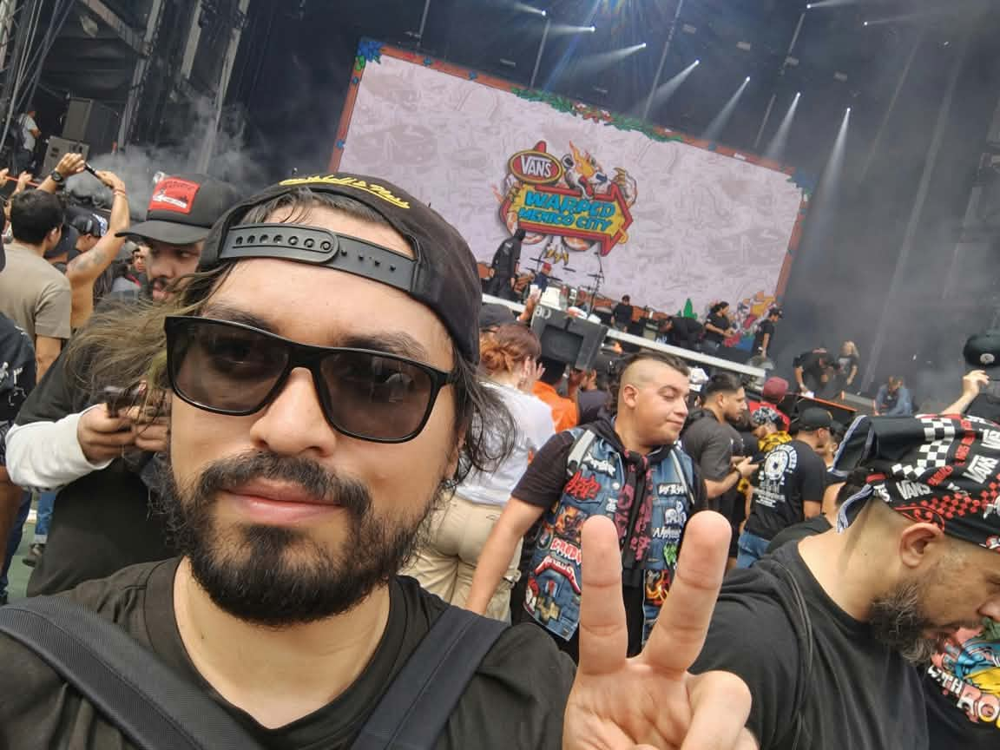
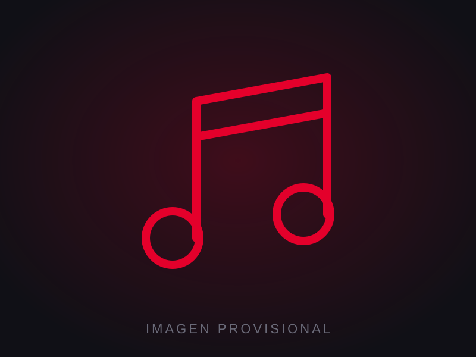
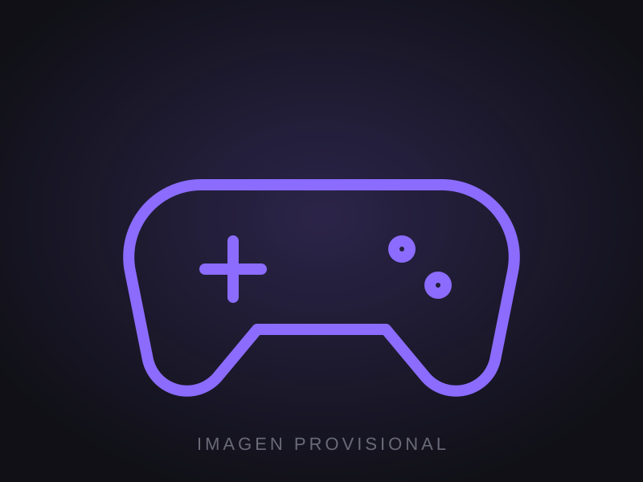
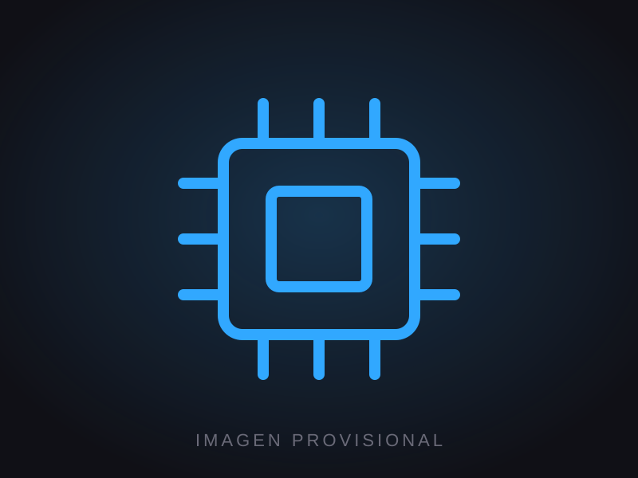
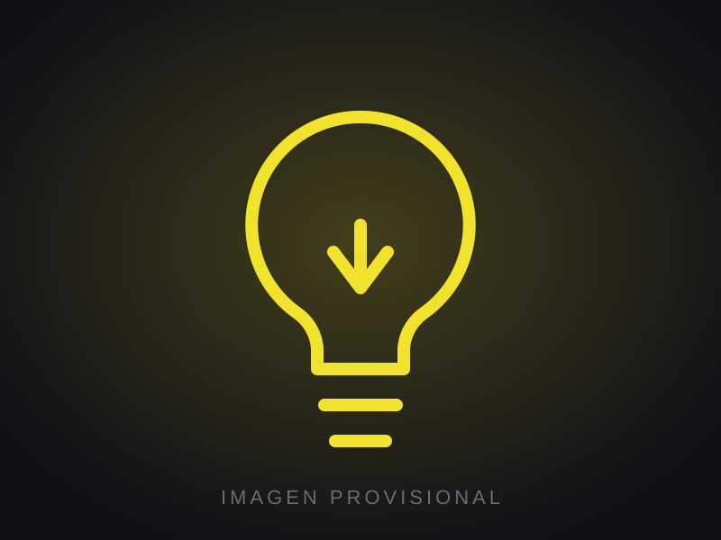
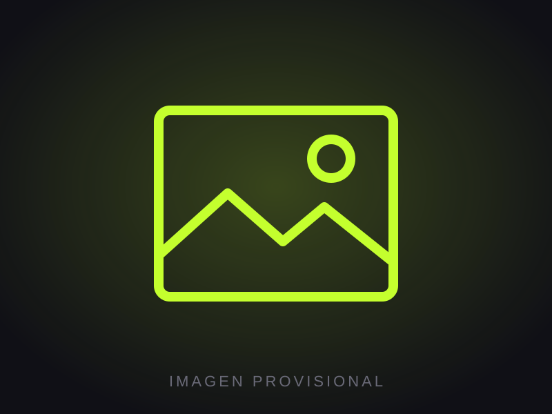

SOBREMÍ

Me considero una persona curiosa, creativa e independiente. Me gusta aprender, entender cómo funcionan las cosas y no quedarme con la primera respuesta cuando algo realmente me interesa. Se me facilita aprender por mi cuenta; soy bastante autodidacta y disfruto investigar, experimentar y aprender haciendo.
Me interesan mucho el diseño, la música, los videojuegos y la tecnología, pero también me gusta crear mis propios proyectos y explorar cosas nuevas. Soy bastante directo y tengo gustos muy definidos; cuando algo no me convence, prefiero seguir buscando hasta encontrar algo que realmente me guste. También me gusta mejorar constantemente y aprender nuevas habilidades, aunque a veces puedo ser demasiado detallista o darle muchas vueltas a las cosas.
Lo que me mueve

Música
Fuera del diseño, gran parte de mi tiempo gira alrededor de la música, los videojuegos, el cine y la tecnología. La música es una de mis mayores aficiones, especialmente el rock y sus diferentes variantes, y disfruto descubrir bandas, conciertos y nuevas propuestas.

Videojuegos
También soy un apasionado de los videojuegos y de todo lo relacionado con la cultura que los rodea. Me interesa tanto jugarlos como explorar cómo están hechos, su dirección artística, diseño de escenarios y todos los elementos que hay detrás de ellos.

Tecnología
La tecnología es otra de mis grandes curiosidades. Me gusta experimentar con diferentes dispositivos, programas y herramientas, entender cómo funcionan y encontrar nuevas formas de utilizarlos.

Aprender por mi cuenta
En general, disfruto mucho aprender por mi cuenta y meterme en temas que despiertan mi curiosidad. Me gusta pasar de una afición a otra, experimentar y convertir algunas de esas ideas en proyectos propios.

Este portafolio
Este portafolio reúne principalmente mi trabajo como diseñador, pero también representa una parte de las cosas que me gustan, me inspiran y despiertan mi curiosidad.